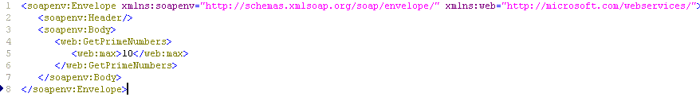

Dynamically parse a WSDL and invoke it.
This can be used to develop an abstract or wrapper service for concrete Web services for applications or BPEL.
Step 1:
WSDL parsing
Step 2:
Dynamic client with JAX-WS
or
Dynamic client with Axis2
About other approaches:
Apache WSIF (Web Service Invocation Framework): It is based on Axis1. Last updated was on 2006, we recommend to ignore it.
javax.xml.ws.Dispatch : Using Dispath API which works at the XML message level.
http://java.boot.by/scdjws5-guide/ch04s08.htmlhttp://publib.boulder.ibm.com/infocenter/wasinfo/v7r0/index.jsp?topic=/com.ibm.websphere.express.doc/info/exp/ae/twbs_jaxwsdynclient.html
Following code use JAX-WS dispatch API
The SOAPACTION_URI_PROPERTY is set, is not in above reference. This is need for .Net based web services.
public SOAPMessage invoke(QName serviceName, QName portName, String endpointUrl, String soapActionUri) throws Exception {
/** Create a service and add at least one port to it. **/
Service service = Service.create(serviceName);
service.addPort(portName, SOAPBinding.SOAP11HTTP_BINDING, endpointUrl);
/** Create a Dispatch instance from a service.**/
Dispatch dispatch = service.createDispatch(portName,
SOAPMessage.class, Service.Mode.MESSAGE);
// The soapActionUri is set here. otherwise we get a error on .net based services.
dispatch.getRequestContext().put(Dispatch.SOAPACTION_USE_PROPERTY, new Boolean(true));
dispatch.getRequestContext().put(Dispatch.SOAPACTION_URI_PROPERTY, soapActionUri);
/** Create SOAPMessage request. **/
// compose a request message
MessageFactory messageFactory = MessageFactory.newInstance();
SOAPMessage message = messageFactory.createMessage();
//Create objects for the message parts
SOAPPart soapPart = message.getSOAPPart();
SOAPEnvelope envelope = soapPart.getEnvelope();
SOAPBody body = envelope.getBody();
//Populate the Message. In here, I populate the message from a xml file
StreamSource preppedMsgSrc = new StreamSource(new FileInputStream("req.xml"));
soapPart.setContent(preppedMsgSrc);
//Save the message
message.saveChanges();
System.out.println(message.getSOAPBody().getFirstChild().getTextContent());
SOAPMessage response = (SOAPMessage) dispatch.invoke(message);
return response;
}
Content of req.xml :

public class Main {
public static void main(String[] args) {
//proxy setting, only if you need
System.setProperty("http.proxyHost", "proxy.dcu.ie");
System.setProperty("http.proxyPort", "8080");
System.setProperty("sun.net.client.defaultConnectTimeout", "" + 2000);
System.setProperty("sun.net.client.defaultReadTimeout", "" + 2000);
Main m = new Main();
String targetNameSpace = "http://microsoft.com/webservices/";
String endpointUrl = "http://www50.brinkster.com/vbfacileinpt/np.asmx";
QName serviceName = new QName(targetNameSpace, "PrimeNumbers");
QName portName = new QName(targetNameSpace, "PrimeNumbersSoap");
String SOAPAction = "http://microsoft.com/webservices/GetPrimeNumbers";
SOAPMessage response;
try {
response = m.invoke(serviceName, portName, endpointUrl, SOAPAction);
if (response.getSOAPBody().hasFault()) {
System.out.println(response.getSOAPBody().getFault());
} else {
System.out.println("ok");
}
} catch (Exception ex) {
ex.printStackTrace();
}
}
public SOAPMessage invoke(QName serviceName, QName portName, String endpointUrl, String soapActionUri) throws Exception {
...
}
}
Source code in NetBeans project: here
http://today.java.net/pub/a/today/2006/12/13/invoking-web-services-using-apache-axis2.html
Two steps.
// step 1. create a dynamicClient; ServiceClient dynamicClient = new ServiceClient(configContext, wsdlURL,wsdlServiceName, portName); // step 2. then send a payLoad and get a response. OMElement res = dynamicClient.sendReceive(createPayLoad()); System.out.println(res);Following is a function to create a payload
public OMElement createPayLoad() {
OMFactory fac = OMAbstractFactory.getOMFactory();
OMNamespace omNs = fac.createOMNamespace(
"http://ws.apache.org/axis2/xsd", "ns1");
OMElement method = fac.createOMElement("echo", omNs);
OMElement value = fac.createOMElement("value", omNs);
value.setText("Hello , my first service utilization");
method.addChild(value);
return method;
}
While, above does not work with wsdl has soapAction element for me. and cause following error
org.apache.axis2.AxisFault: Server did not recognize the value of HTTP Header SOAPAction: urn:anonOutInOp.
at org.apache.axis2.util.Utils.getInboundFaultFromMessageContext(Utils.java:435)
...
Another way is using an Option Object, and set SOAPAction in the Option. This works without above error.
ServiceClient serviceClient = new ServiceClient();
// create option object
Options opts = new Options();
opts.setProperty(HTTPConstants.CHUNKED, false);
opts.setTo(new EndpointReference(endpointUrl));
// >> set the SOAPAction value here !! To fix above error !!
opts.setAction("http://ws.fraudlabs.com/PostalCodeWorld_Mexico");
serviceClient.setOptions(opts);
OMElement res = serviceClient.sendReceive(createPayLoad());
System.out.println(res);
Following is additional information with OMElement for manipulating PayLoad
AXIOM stands for AXIs Object Model and is a based on StAX(Streaming API for XML) and was developed to improve performance in XML parsing mechanism. AXIOM uses light weight XML with smaller hierarchy of XML elements than traditional XML technologies. It was initially developed for Axis but is now an Apache Commons project. AXIOM uses a technology called pull parsing where required parsing is done by the AXIOM engine rather than depending on externals parsers. Axiom comprises two layers
OMFactory fac = OMAbstractFactory.getOMFactory();
// option 1: create a xmlstreamreader from a bean
XMLStreamReader reader = BeanUtil.getPullParser(new Person("wong"));
// option 2: create a xmlstreamreader from a file
FileInputStream inputStream = new FileInputStream("1.xml");
XMLInputFactory inputFactory = XMLInputFactory.newInstance();
XMLStreamReader reader = inputFactory.createXMLStreamReader(inputStream);
// Finally, create a OMElement from a xmlstreamreader
StreamWrapper parser = new StreamWrapper(reader);
StAXOMBuilder stAXOMBuilder = OMXMLBuilderFactory.createStAXOMBuilder(OMAbstractFactory.getOMFactory(), parser);
OMElement element = stAXOMBuilder.getDocumentElement();
System.out.println("element::" + element.toString());